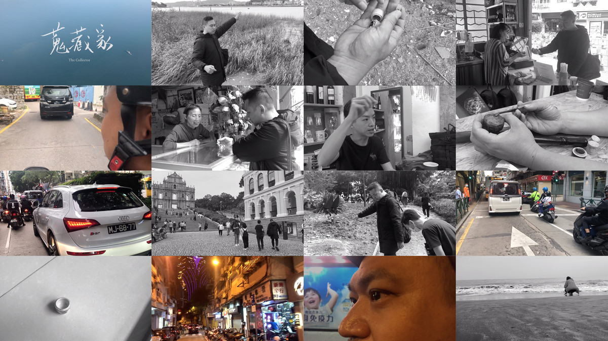
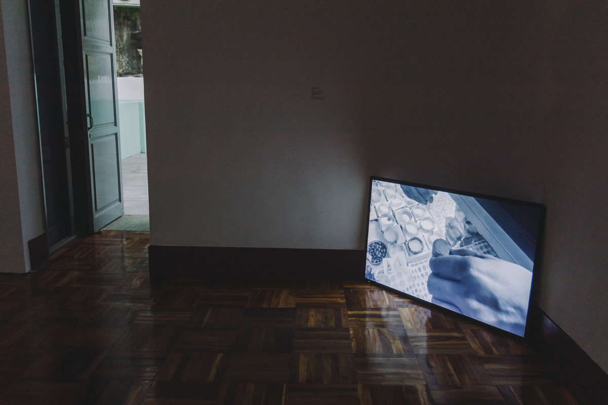
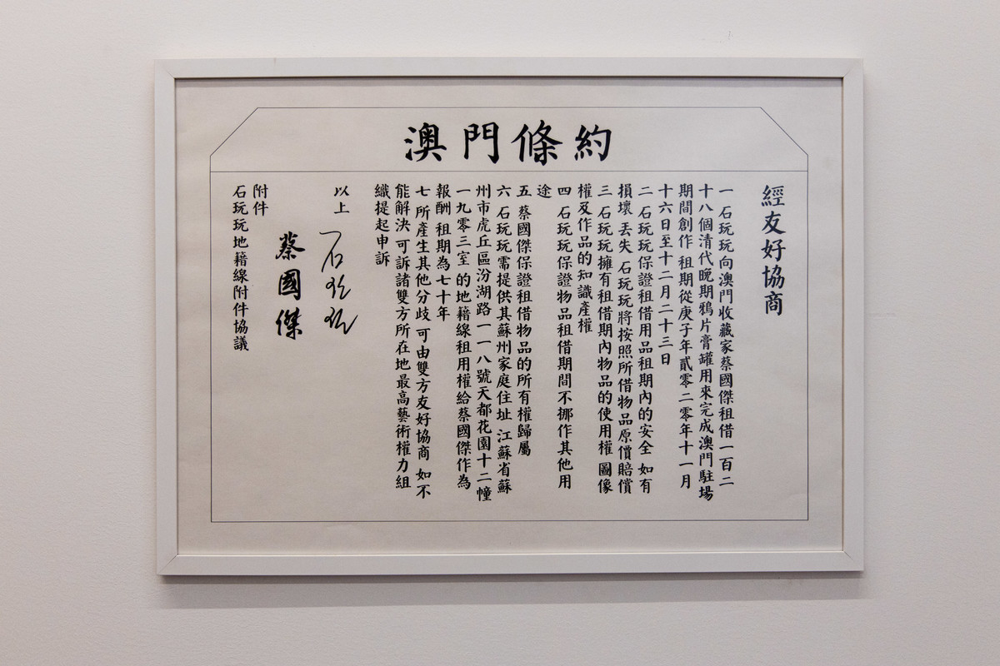
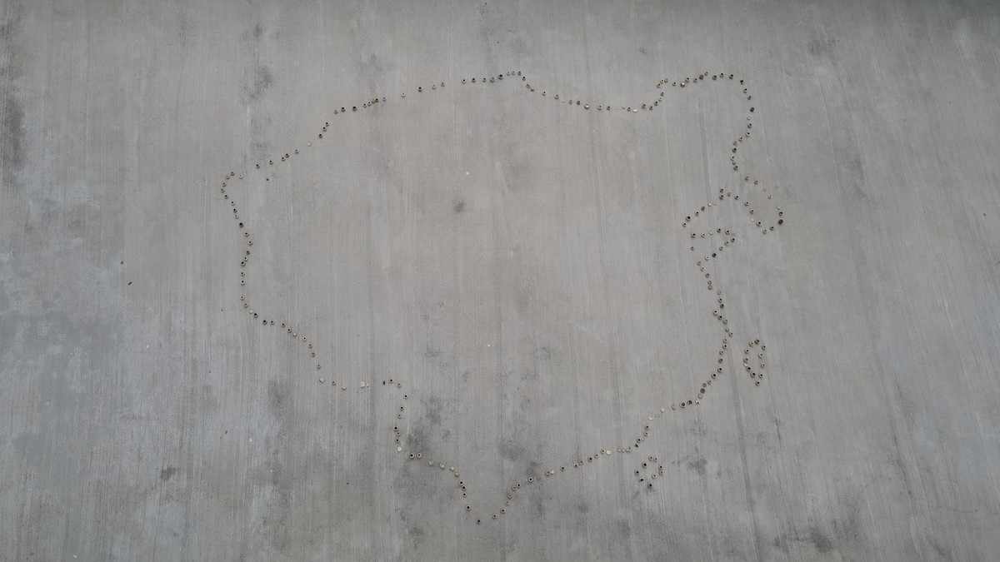
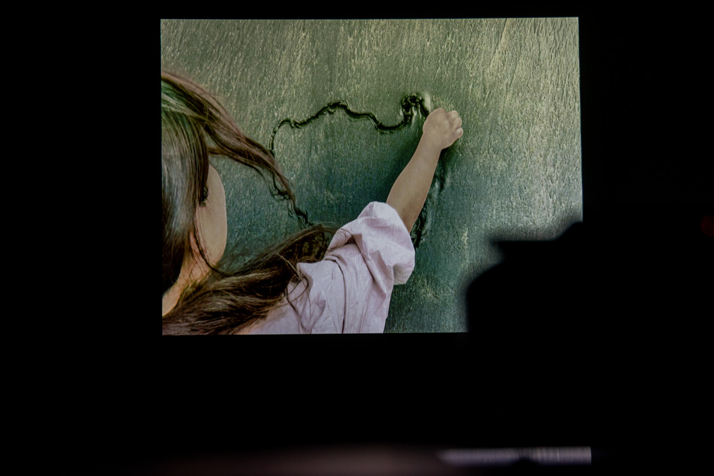
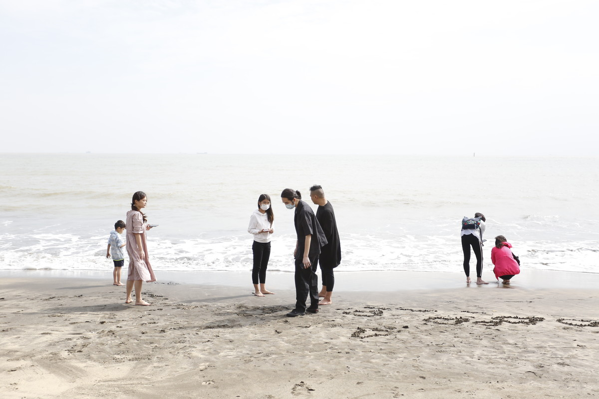
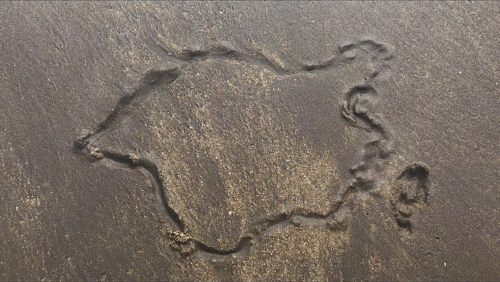

海边笔记 | SEASIDE NOTES

收藏家 单屏幕影像，约30分钟，尺寸可变，2020
The Collector Single screen video, Approx. 30 min, Size variable, 2020
为与友人，澳门市民、渔村居民、古董商、文博专家讨论澳门的鸦片膏罐的故事。
I discuss stories of Macao's opium ointment jars with friends, Macao residents, fishing villagers, antique dealers, and cultural experts.
澳门条约 装置，陶制鸦片膏罐，整体尺寸可变，文件50x70cm，2020
Treaty of Macau Installation, Ceramic opium ointment jar, Overall size variable, Document 50x70cm, 2020
将这些鸦片膏罐在展厅里呈现，展完这些鸦片膏罐将还给澳门友人。
至今在澳门沿海地区或者沙滩上可以捡到这些鸦片膏罐。鸦片战争时期澳门为远东最大的鸦片中转站，友人告诉我这些都是清代末年南海上的鸦片运输船的遗留物，沉在海底后，被百年潮汐、海浪冲回海岸。
与友人签订一则《澳门条约》，约定在展览期间向友人借所有他收藏的鸦片膏罐，并在展厅里将这些鸦片膏罐摆放成1842年（南京条约签订时间）清国地图的輪廓，展览结束后这些鸦片膏罐将如数返还。
These opium ointment jars are displayed in the exhibition room. Afterwards, they will be returned to the Macao friend.
1. Today opium ointment jars like these still can be found in coastal areas or on beaches of Macao. During the Opium War, Macao was the largest opium trading port in the Far East. The friend told me that these were remnants of opium ships on the South China Sea in the late Qing dynasty. The jars had sunk to the bottom of the sea, and were brought back to the shore by waves after more than a century.
2. A "Treaty of Macau" was signed with a local friend, in which agreed to place the opium jars as the outline of Qing Dynasty's map in 1842 (when "Treaty of Nanking" was signed) in the exhibiting area. All of them will be returned upon completion of the exhibition.
1842年清国地图轮廓 单屏幕影像，約20分钟，尺寸可变，2020
Outline of Qing Dynasty's Map in 1842 Single screen video, Approx. 20 min, Size variable, 2020
一群澳门年轻人，在南中国海的沙滩上画出1842年（南京条约签订时间）清国地图的輪廓，任由海水冲刷。
A group of young people from Macau, drawing the outline of Qing Dynasty's map in 1842 (when "Treaty of Nanking" was signed) on the beach, for seawater’s wash/rinse.
部分图片由牛房仓库提供，摄影李佩禎
Some images courtesy of Ox Warehouse, Photo by Puicheng Lei

收藏家，牛房仓库，澳门
The Collector , Ox Warehouse, Macau

澳门条约，牛房仓库，澳门
Treaty of Macau, Ox Warehouse, Macau

澳门条约，牛房仓库，澳门
Treaty of Macau, Ox Warehouse, Macau

1842年清国地图轮廓，牛房仓库，澳门
Outline of Qing Dynasty's Map in 1842, Ox Warehouse, Macau

1842年清国地图轮廓，作品实施现场，黑沙滩，澳门
Outline of Qing Dynasty's Map in 1842, scene of implementation, Praia de Hac Sá, Macau

1842年清国地图轮廓，录像截帧
Outline of Qing Dynasty's Map in 1842, The video screen